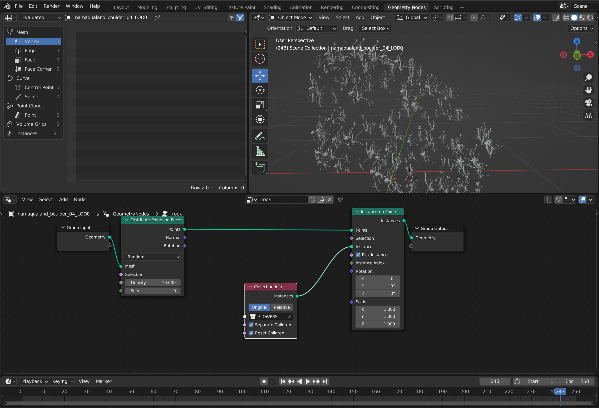
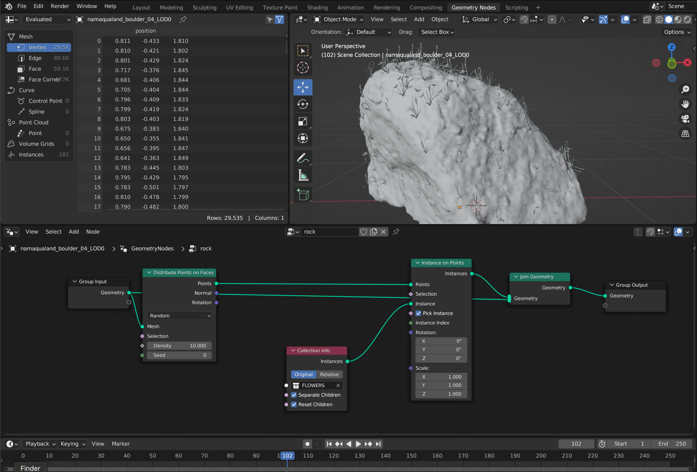

REFERENCE
My word for this project is "densifying". I thought of plants being over-populated, which is what happened in the late Devonian extinction, resulting in the decrees of levels of oxygen in seas got some of the marine life killed. For this project specifically, I want to simulate the plants over-growth scenario.

EXPERIMENTS & REFERENCE
Originally, I was thinking of making this simulation inside of Unity, on top to map out the influenc elements such as rain. However, Unity has its own limitation of modeling something that grow randomly or simulate that growth from bottom up. The only way I can figure out is to scale things up and down to simulate that growth. after some research, I turned to blender to get a more realistic densifying and growth effect. I found a Youtube tutorial on how to simulate that growth by instancing in blender, and will walk through on how I modify the nodes to meet the project's subject.
BLENDER FILE SETUP
first thing off, I found a 3D model that works with my brief on PolyHaven, then to figure out the shader of the model inside of blender as shown below.
GEOMETRY NODES SETUP
 
FINAL OUTCOME
For this interface, I'm thinking about making a randomizing finger puppet generating machine based on ml5js's hand pose and p5js.